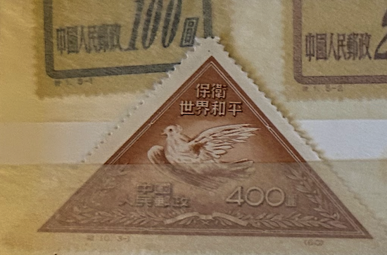
| SOURCE | TITLE| IMAGE MATCH | click to source page |
| eBay | PEOPLES REPUBLIC OF CHINA SCOTT 108 USED VF RPT (B)- 1951 $400 ORG BRN ISSUE | eBay | 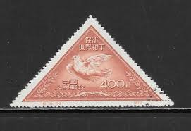 |
| eBay | VTG 1951 Chinese Defend World Peace Stamp, Picasso Dove, Triangle | eBay | 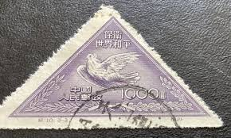 |
| HipStamp | China Stamps: 1951 Sc#110-World Peace-Mint Stamps- 69 Years OLD Stamp Mint Stamp | Asia - China, General Issue Stamp / HipStamp |  |
| eBay | PRC China Stamps: 1951 Picasso Dove, Short Set SC 108, 110 (2) P 12.5, Mint H | eBay | 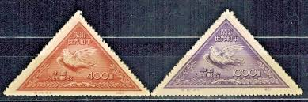 |
| Etsy | Postage Stamps / Sets - Lots / Rare Stamps of China / 1951 Year / Unused No Stamp / People's Republic of China (PRC) / in Perfect Condition - Etsy | 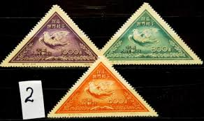 |
| HipStamp | China-1951-Sc#108-110 Picasso Painting-Peace Dove-Fancy Cancel VF Rare | Asia - China, General Issue Stamp / HipStamp |  |
| Carousell | China Stamps C10 MNH NGAI, Hobbies & Toys, Memorabilia & Collectibles, Stamps & Prints on Carousell | 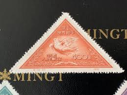 |
| Todocolección | china 1951 - nuevos - sin goma- aniversario de - Buy Antique stamps of China on todocoleccion | 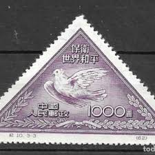 |
| Today's Stamp issued on UNESCO World Heritage Sites Series ll |  | |
| S በ 出· American ISTORIO Tohn F. Kennedy Coin Stamp Portfolio មាមម្យយ្រតរិត PS 00 B | 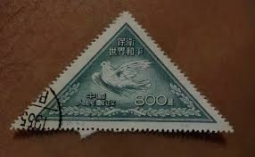 | |
| Todocolección | sellos de republica popular china 1951, paloma - Buy Antique stamps of China on todocoleccion | 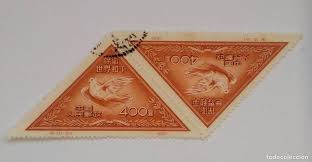 |
| Franklin Roosevelt stamps sb $3 (cjly) ሊን и! | 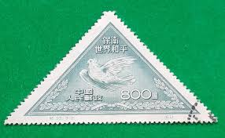 | |
| Hallo, may be China Stamps??? |  | |
| eBay UK | 2 Number Postage Chinese Stamps for sale | eBay UK | 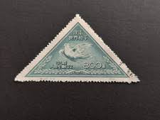 |
| La Philatélie Chinoise | Réimpressions de la R.P.C. – La Philatélie Chinoise Paris | 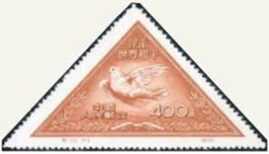 |
| Bob Shop | China - 1951 China peace dove triangles 2 used & 1 unused was listed for 50.00 on 10 Jan at 11:16 by Cape Town Coins CBD in Cape Town (ID:663667051) |  |
| eBay | CHINA SCOTT 110 STAMP MNH NO GUM 9611M | eBay | 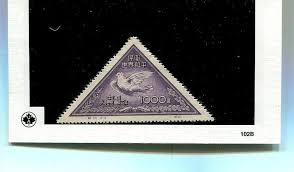 |
| GetArchive | Watermark crown script CA - public domain postal stamp scan - PICRYL - Public Domain Media Search Engine Public Domain Image | 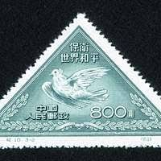 |
| yzzs.cc | 探寻中国邮政纪念邮票中动物形象- 集邮- 仪征之声 | 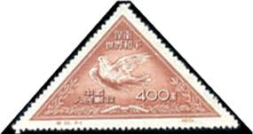 |
| Shutterstock | Triangle Post Stamps: Over 788 Royalty-Free Licensable Stock Photos | Shutterstock | 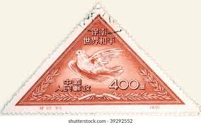 |
| 壹讀 | 奇形怪狀——票界的「神經病」 - 壹讀 | 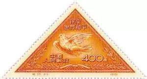 |
| Alamy | Postage stamp: White dove of peace in the hands of young people. III friendship youth games in Moscow, USSR, 1957 Stock Photo - Alamy | 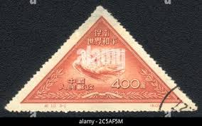 |
| Letao Malaysia | Letao Malaysia－【中国切手】海外切手 中国 13枚セット 消印有10枚 1円スタート | 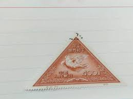 |
| eBay | Peoples Republic of China Scott #108 thru #110 (3 Reprints) VF (Used) SCV: $11 | eBay | 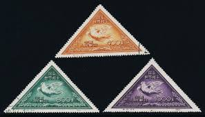 |
| Shutterstock | 24+ Thousand China Post Royalty-Free Images, Stock Photos & Pictures | Shutterstock | 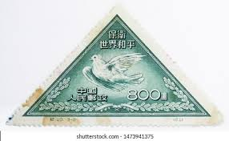 |
| Etsy | Sellos postales / Series - Lotes / Sellos raros de China / Año 1951 / Sin usar / República Popular China (RPC) / En perfecto estado - Etsy España |  |
| Etsy | Postage Stamps / Sets - Lots / Rare Stamps of China / 1951 Year / Unused No Stamp / People's Republic of China (PRC) / in Perfect Condition - Etsy Australia | 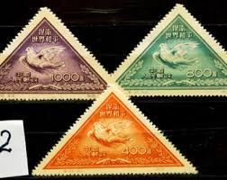 |
| PicClick | CHINA STAMPS COMB. Shipping $1.00 - PicClick |  |
| Aukro | ZNÁMKY STARÉ ČÍNA HOLUBICE | Aukro | 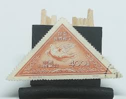 |
| eBay | China (PRC) 1951 Sc#108-110 "World Peace (Picasso Dove)" reprint Mint/NH VF | eBay | 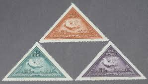 |
| eBay UK | China 1951 Peace (2nd Issue) set of 3 Dove MH / Used stamps SG1510 - 1512 | eBay UK |  |
| eBay | People's Republic of China PRC 108-110 / Picasso Dove Stamps Used & MH Reprints | eBay | 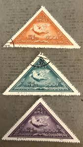 |
| Todocolección | f-ex28169 vanuatu mnh 1996 ethnography aborigen - Buy Stamps about art on todocoleccion |  |
| eBay | China 1951 - Used stamp. Mi Nr.: 115 I. Original..........(DE) MV-9522 | eBay |  |
| Etsy | Vintage China Stamps Post 1949 - Etsy Australia | 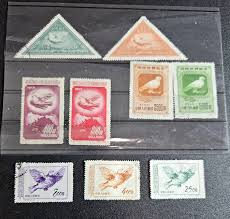 |
| eBay | 1950 China Stamps #59 Lot HE54 | eBay | 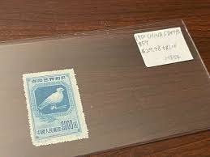 |
| eBay | ICOLLECTZONE PR China 57-58 VF used | eBay | 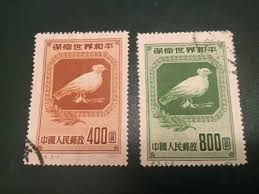 |
| eBay | Japanese Used Animal Kingdom Postal Stamps for sale | eBay | 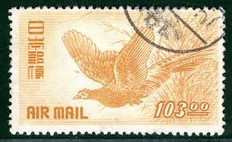 |
| PicClick | CHINA PRC 1994-17M 1994-17 三国演义4次 1994 SS MNH Original unopen 100 s1 $90.00 - PicClick | 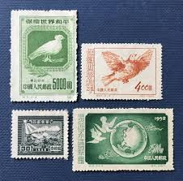 |
| eBay | Japanese Bird Postal Stamps for sale | eBay | 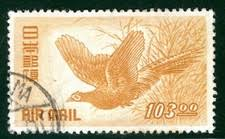 |
| nordfrim.com | Buy China - Aid stamp - Mint | 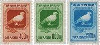 |
| Amazon.com | Prophila Collection People's Republic of China 192-195 (Complete.Issue.) unused 1952 Peace (Stamps for Collectors) Birds : Toys & Games - Amazon.com |  |
| eBay | northeast-China (VR China) 176II-178II (complete issue) unused 1950 world peace | eBay | 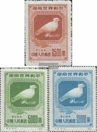 |
| eBay | RYUKYU 1960 LITTLE EGRET AND RISING SUN MNH Sc 74 | eBay | 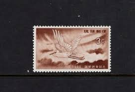 |
| eBay | PR CHINA Stamp Lot - 1950 Peace Dove & Branch Sn 57-59 Mint🔥Full Set ndc5 | eBay | 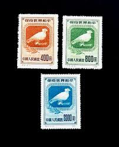 |
| eBay | RARE 1919 JAPAN # 158 DOVE&OLIVE BRANCH USED | eBay | 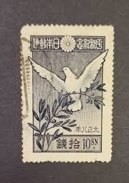 |
| Xabusiness.com | C18 Scott 167-170 Asian Pacific Peace Conference - China Stamps | 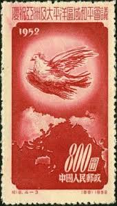 |
| eBay | China PRC Scott 57-59 1950 Dove by Picasso F/VF MNG full set Reprints A6305-844 | eBay | 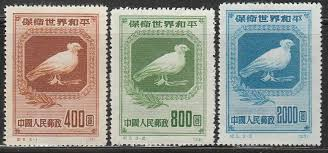 |
| eBay | China Sc 187-9, C24, Mint, No Gum As Issued, Fresh Color, Very Fine | eBay |  |
| eBay | China 1950-Mint stamps issued without gum. Mi nr.: 57-59. Reprint (DE) MV-2242 | eBay | 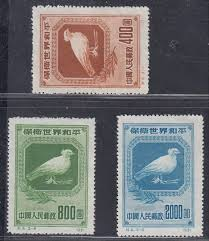 |
| eBay | China 1953 World Peace C24.(3-1,2,3) ASG VF/XF 85 Mint OP | eBay | 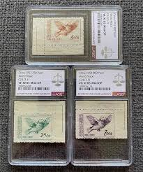 |
| eBay | Celebrities Used Chinese Stamps for sale | eBay | 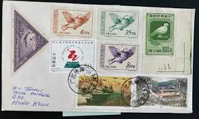 |
| eBay | CHINA PRC 1953 C24 WORLD PEACE, DOVES (Scott 187-89) VF MNH | eBay | 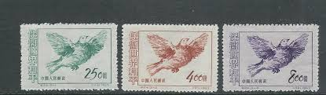 |
| eBay | China PRC stamps #187-9, Blocks of 4, No Gum As Issued | eBay | 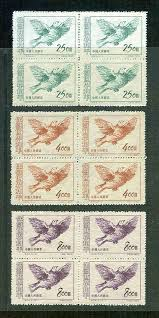 |
| eBay | China C5 Defend World Peace Reprint Set of 3v - Used (SL226) | eBay | 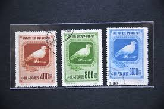 |
| eBay | PRC China, 1950, sc#57-59, Mint, NH, NGAI, Complete set of 3 stamps | eBay | 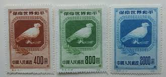 |
| Xabusiness.com | C5 Scott 57-59 Defend World Peace (1st set) - China Stamps | 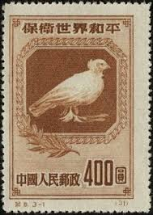 |
| stamps-plus.com | Stamps Plus | Japan | 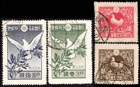 |
| eBay | North East China 1950 - Mint no gum. Mi Nr.: 176/178 (x6). REPRINTS..(VG) MV-17 | eBay | 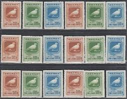 |